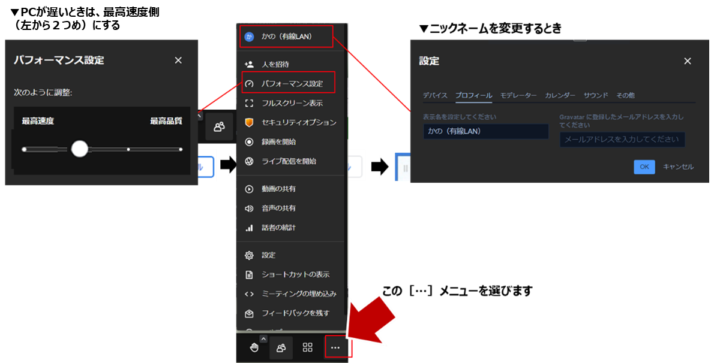

無償コミュニティ版オンラインミーティング「jitsi meet（ジッチ・ミート）」を参加者視点で使い方を確認しましょう
オンライン会議の開催案内（URL）を受け取ったら、ChromeなどのWEBブラウザで開きます。ほとんどの場合はメールで受け取ったURLをクリックすると自動でWEBブラウザが立ち上がります。
最初の１回だけジッチ・ミートが「マイクとカメラを使うことを許可」します。
これも最初の１回だけ。下記の画面が表示されたら「□このメッセージを再度表示しない」にチェック（✔）を入れて右上の［×］を押します。なお、PCの性能に余裕があれば「Chrome拡張機能」をインストールしても構いません。
自分の名前（ニックネーム）を入力して［ミーティングに参加］ボタンを押します。
これでオンラインのみんなに挨拶ができるはずです。次はジッチ・ミートのメニューを操作してみましょう。
主催者がブレークアウトルーム（小部屋）を設定した場合、最初に参加したみんながいる大部屋から、数人だけの小部屋に移動できます。下図のメニューをクリックして、行きたいブレークアウトルームを選んで［参加］ボタンをクリック。
自分のPCカメラを表示したり、停止したりメニューの操作を試してください。
自分のPCマイクをミュート（停止）したり、ミュート解除（オン）したりメニューの操作を試してください。
みんなのプログラミングをサポートするため、PC画面をメンターやお友達に見せることができます（同じ画面を共有します）。
メッセージ［meet.jit.siが画面を共有しています］が邪魔（じゃま）な場合は［非表示］を押します。この間もずうっと、みんなに画面を共有しているので、みんなに秘密の画面があるときは見せないように気をつけましょう。
ジッチ・ミートとScratchの切り替えは、WEBブラウザの上部にあるタブで、自分が切り替えます。メンターが「メンターの画面を見てねー」と言ったらジッチ・ミートの画面を確認してください。自分がScratchを使うときも、ブラウザのタブで切り替えてください。
PCが遅い場合は「パフォーマンス設定」の「最高速度」を選ぶと音声だけになるので、左から２番目の［・］を選んでください。速いPCなら「最高品質」にすると画面がくっきりと快適です。
画面に表示される名前（ニックネーム）は下図のプロフィールで設定します。
